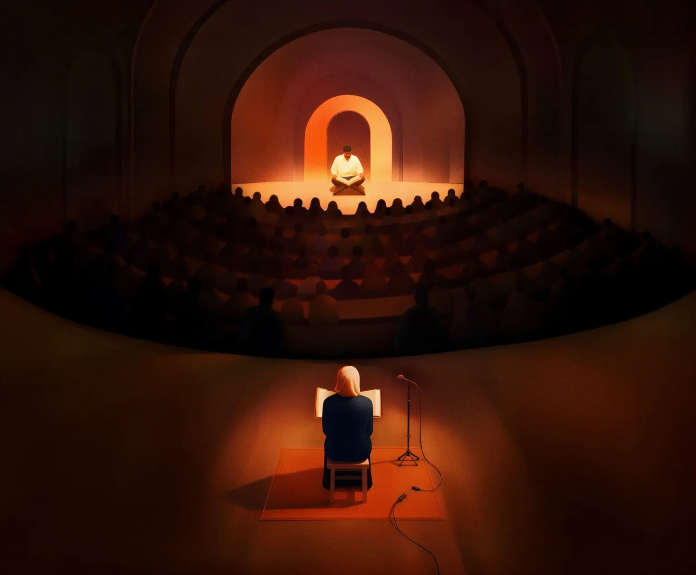

Desktop
A Recitation Revolution
For most of her life, Maryam believed women couldn't recite the Qur'an aloud. That a woman's voice, especially while reciting the Qur'an, is awrah. Something to be hidden. Then, one day in high school, she heard a girl recite in public.
Transcript & Credits →
Mobile

A Recitation Revolution
For most of her life, Maryam believed women couldn't recite the Qur'an aloud. That a woman's voice, especially while reciting the Qur'an, is awrah. Something to be hidden.
Transcript & Credits →